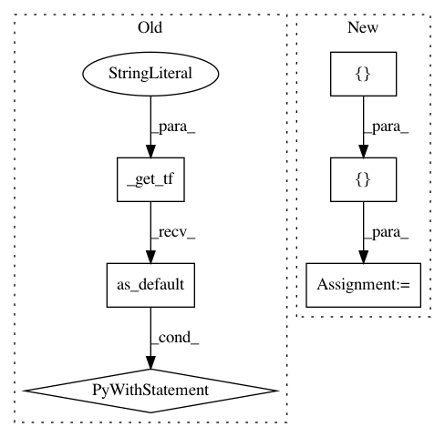

ef3c40a4542966e2dac08cc51710ddedc31fd2d9,deepchem/models/tensorgraph/progressive_multitask.py,ProgressiveMultitaskRegressor,add_adapter,#ProgressiveMultitaskRegressor#Any#Any#Any#,215
Before Change
// prev_layers is a list with elements of size
// (batch_size, layer_sizes[i-1])
prev_layer = Concat(axis=1, in_layers=prev_layers)
with self._get_tf("Graph").as_default():
alpha = TensorWrapper(
tf.Variable(
tf.truncated_normal((1,), stddev=alpha_init_stddev),
name="alpha_layer_%d_task%d" % (i, task)))
trainable_layers.append(alpha)
prev_layer = prev_layer * alpha
dense1 = Dense(
in_layers=[prev_layer],
out_channels=layer_sizes[i - 1],
After Change
alpha = layers.Variable(tf.truncated_normal((1,), stddev=alpha_init_stddev))
trainable_layers.append(alpha)
prev_layer = Multiply()([prev_layer, alpha([])])
dense1 = Dense(
layer_sizes[i - 1],
kernel_initializer=tf.truncated_normal_initializer(
stddev=weight_init_stddev),
bias_initializer=tf.constant_initializer(value=bias_init_const))
prev_layer = dense1(prev_layer)
trainable_layers.append(dense1)
dense2 = Dense(
layer_sizes[i],
kernel_initializer=tf.truncated_normal_initializer(
stddev=weight_init_stddev),
use_bias=False)
prev_layer = dense2(prev_layer)
trainable_layers.append(dense2)
return prev_layer, trainable_layers
In pattern: SUPERPATTERN
Frequency: 3
Non-data size: 6
Instances
Project Name: deepchem/deepchem
Commit Name: ef3c40a4542966e2dac08cc51710ddedc31fd2d9
Time: 2019-06-10
Author: peastman@stanford.edu
File Name: deepchem/models/tensorgraph/progressive_multitask.py
Class Name: ProgressiveMultitaskRegressor
Method Name: add_adapter
Project Name: deepchem/deepchem
Commit Name: b68db1aaf6abe4d2cea8321cc6f1564228dd60f5
Time: 2019-05-31
Author: peastman@stanford.edu
File Name: deepchem/models/tensorgraph/models/seqtoseq.py
Class Name: SeqToSeq
Method Name: predict_embeddings
Project Name: deepchem/deepchem
Commit Name: b68db1aaf6abe4d2cea8321cc6f1564228dd60f5
Time: 2019-05-31
Author: peastman@stanford.edu
File Name: deepchem/models/tensorgraph/models/seqtoseq.py
Class Name: SeqToSeq
Method Name: predict_from_sequences